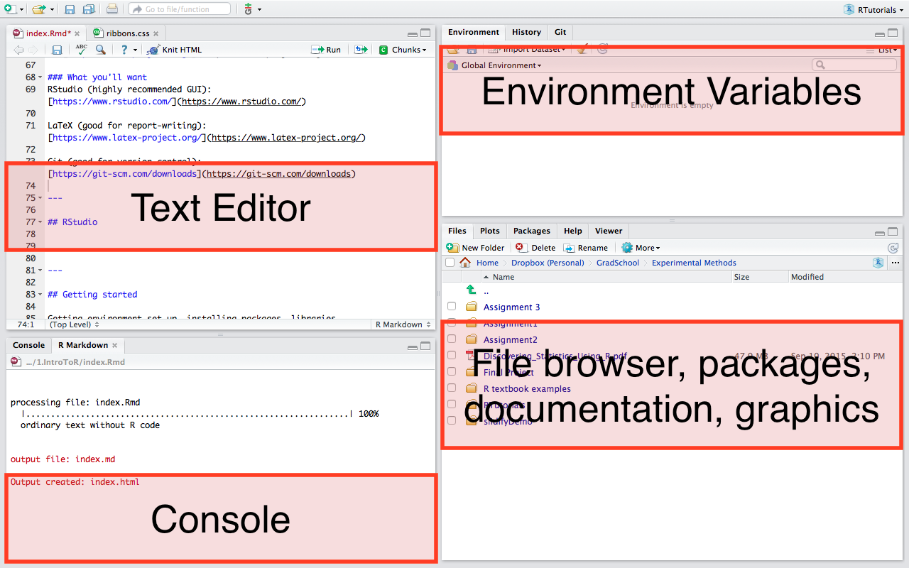

title : Introduction to R subtitle : author : Jenna Blumenthal job : MIE 1402 framework : deckjs # {io2012, html5slides, shower, dzslides, ...} highlighter : highlight.js # {highlight.js, prettify, highlight} hitheme : tomorrow # widgets : [] # {mathjax, quiz, bootstrap} mode : selfcontained # {standalone, draft}
knit : slidify::knit2slides
--- .intro-slide
Introduction to R
Jenna Blumenthal
MIE 1402
What is R?
- Language & environment for statistical computing
- Widely used by statisticians, data miners
- Popular among academics & industry
What is it used for?
- Data handling, organizing
- Basic mathematical operations
- Linear, nonlinear modeling, classical stats tests, time-series analysis, classification, clustering, etc
- Publication-quality graphics
What makes R so great?
- Open source (i.e. free)
- Highly extensible (user-submitted packages)
- Functions available for very specific areas
- Excellent documentation
- Great graphics
- Publication-quality graphs (
ggplot2) - RMarkdown, LaTeX (write reports without copying and pasting)
- Shiny (interative data visualizations, etc.)
- Publication-quality graphs (
- Reproducible analysis
What are some other options?
- SAS, SPSS, Stata, MATLAB, etc...
- Not so free
- Not so open-source (meaning there is a smaller community to help when you get stuck)
Getting set up
What you'll need
What you'll want
RStudio (highly recommended GUI): https://www.rstudio.com/
LaTeX (good for report-writing): https://www.latex-project.org/
Git (good for version control): https://git-scm.com/downloads
RStudio

Console
- Command-line interface
- Type after the
>prompt and R will execute your command - This is where R does the stuff
Editor
- Collection of commands can be edited and saved
File --> New | File --> Open --> R Script
Environment
- What data/values R has in its memory
- Good for viewing complex objects
Files, packages, docs, views
- Browse directory, open files, install/load packages, look at documentation (for help), preview graphs, etc.
Getting started
Before you start being a stats wizard...get organized.
1. Working directory
- The folder you are currently in
- If you ask R to retrieve a certain file, it will look in the working directory (unless another path is given)
- If you save a file from R, it will save in your working directory (ditto)
- Be careful, sometimes you think you are in the correct wd, but you are not. Double check using:
getwd()You can change the working directory using
setwd("Desktop/ExperimentalMethods/RTutorials")2. Install packages/load libraries
- The core of what makes R great
- Some useful ones come preloaded, but there are many more
- Andy Field will reference the ones he uses in the textbook
install.packages("package-name")
library(package-name)Notes
- The first one uses quotes, the second doesn't. Don't ask me why.
- Often you figure out you don't have a package by getting an error.
- Check to see what packages you have installed using
library()- You only have to install the package once, but you need to load the package every time you set up a new environment.
Some basic examples
1+1## [1] 2
a = 4
a## [1] 4
fruit <- c("apples", "pears", "strawberries")Data
There are several ways to import data into your R environment:
# Built into R
read.csv()
read.delim()
read.table()
# rio package
library(rio)
import()
# Base datasets (often used in examples)
library(datasets)
mtcarsViewing , summarizing, etc
mtcars
View(mtcars)
head(mtcars)mtcars[1,]
mtcars[,1]
mtcars$mpg # beacause mtcars is a dataframe!What is a dataframe?
Sort of like a spreadsheet in Excel, except more fun.
- header contains column names
- note, most functions like to work with dataframes, but others like matrices
- Similar, but different object type
- can generally coerce using
as.data.frame()
as.matrix()DIY Dataframe
Note, I rarely do this. Likely you will be pulling data from another source.
metallicaNames <- c("Lars", "James", "Kirk", "Rob")
metallicaAges <- c(47, 47, 48, 46)
metallica_data <- data.frame(Name = metallicaNames, Age = metallicaAges)metallica_data$Age## [1] 47 47 48 46
mean(metallica_data$Age)## [1] 47
Subsetting data
metallica_data$Age >= 47## [1] TRUE TRUE TRUE FALSE
older_band_members <- metallica_data[metallica_data$Age >= 47,]
# OR use subset (a bit more intuitive)
older_band_members <- subset(metallica_data, Age >= 47)R Commander
- GUI interface
- If you are an SPSS user, it may feel more familiar
- I don't like it (it used to crash my computer)
Saving
If you did some data manipulation and would like to save it as a new file:
write.table()
write.csv(metallica_data, "MetallicaData.csv") # note it will save in your wdSave the R file, DON'T save the R workspace
Can also make a project - helpful for saving the working directory, dataframes, etc.
Brief introduction to graphs and ggplot2
hist(mtcars$mpg)
plot(mtcars$mpg, mtcars$disp)
install.packages("ggplot2")library(ggplot2)## Warning: package 'ggplot2' was built under R version 3.2.4
plot <- ggplot(data = mtcars, aes(mpg, disp))
plot + geom_point()
plot + geom_point() + ggtitle("This is my awesome graph")
Note that the plot object isn't updating unless it is reassigned
Read Ch 4 for some more examples.
R Markdown
- instead of C+P-ing everything
- Write your report, generate results, insert graphs, etc. all in the same file
- A few hours of learning will save LOTS of time
- Turn your analyses into:
- Word
- Slides
- HTML (like me!)
- Interactive dashboard
- File --> New --> R Markdown (.Rmd file)
- To generate PDF files, you'll need LaTeX
- Mac: http://www.tug.org/mactex/
- Windows: http://miktex.org/
- We will go into syntax, etc in a future tutorial
More resources
- Datacamp: datacamp.com/courses/free-introduction-to-r
- R Markdown: http://rmarkdown.rstudio.com/lesson-1.html
- The textbook is great
References
Wikipedia: https://en.wikipedia.org/wiki/R_(programming_language)
A (very) short introduction to R: https://cran.r-project.org/doc/contrib/Torfs+Brauer-Short-R-Intro.pdf
Field A, Miles J, Field Z. Discovering Statistics Using R. London: Sage; 2012.